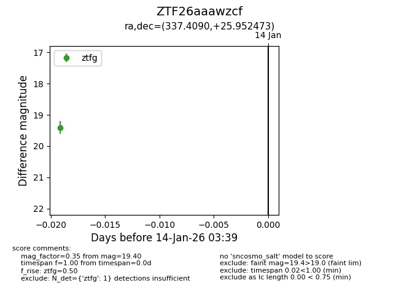
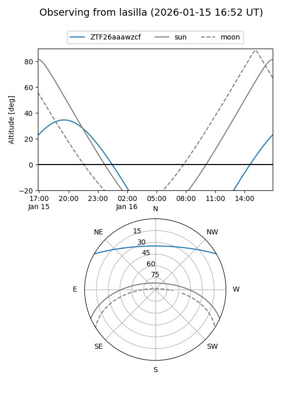
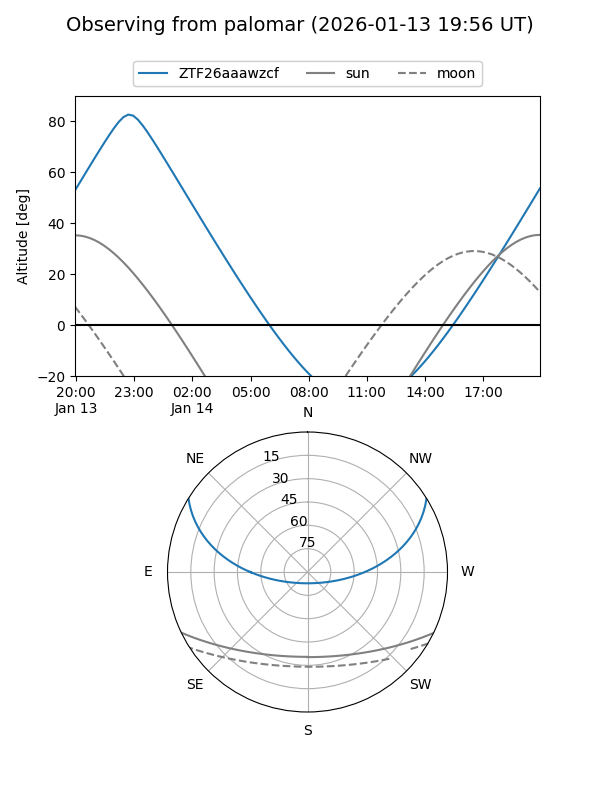

ZTF26aaawzcf
Target ZTF26aaawzcf at 2026-01-14 03:39
Aliases and brokers:
FINK: link
Lasair: link
ALeRCE: link
alt names
ZTF26aaawzcf (ztf,fink_ztf)
Coordinates:
equatorial (ra, dec) = 337.4090,+25.95247
equatorial (HMS+DMS) = 22:29:38.16,+25:57:08.90
galactic (l, b) = (87.1463,-26.89381)
Flags:
Photometry:
last ztfg=19.40
1 ztfg detections
Lightcurve

Visibility


Additional plots